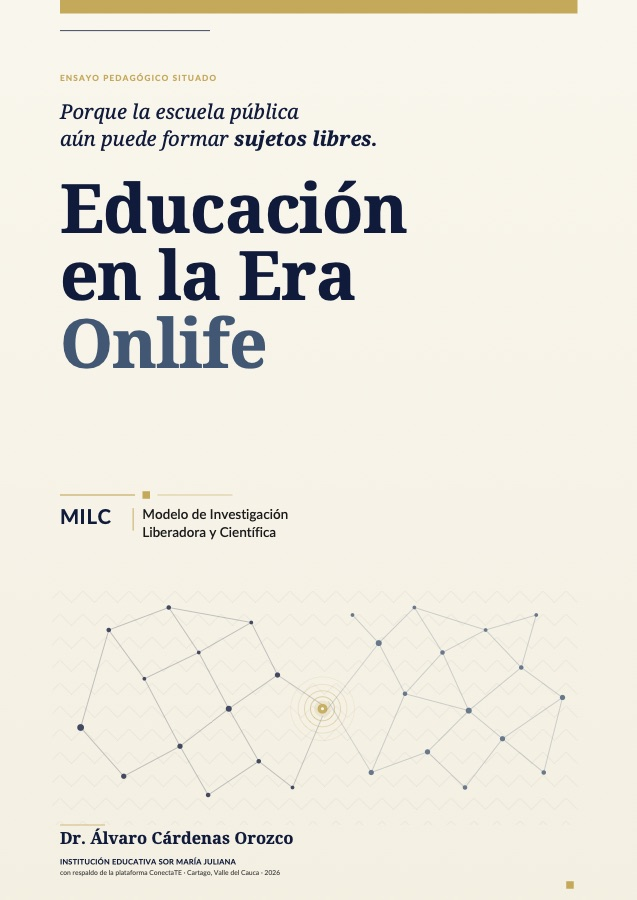
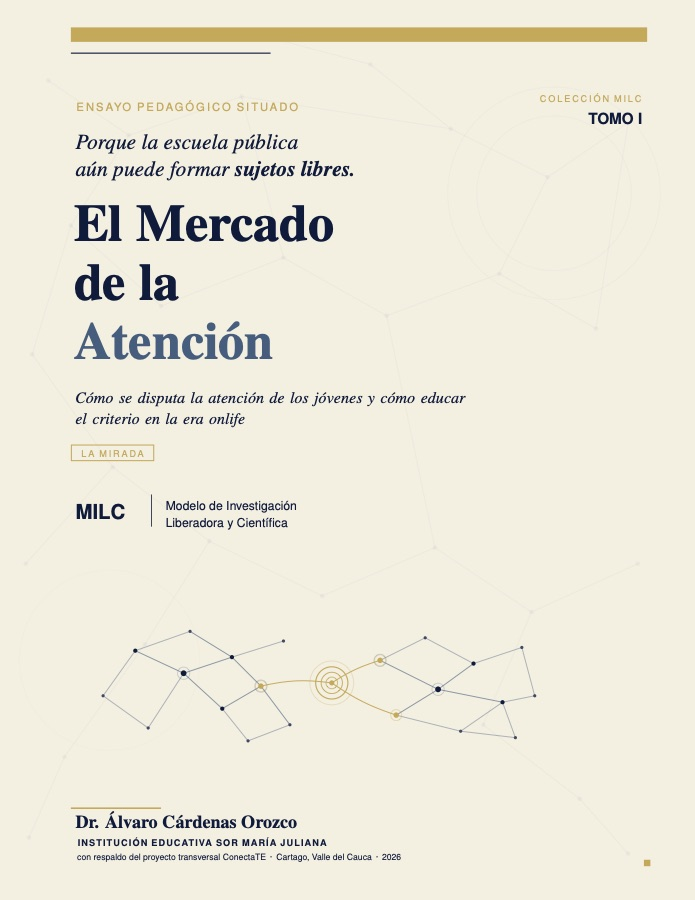
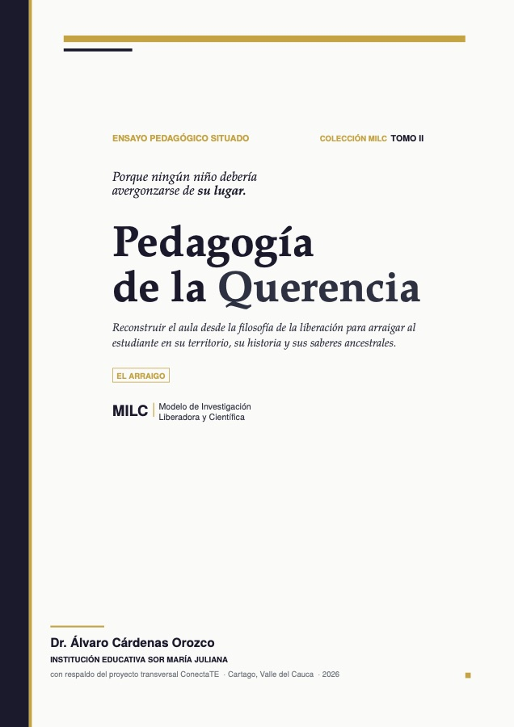
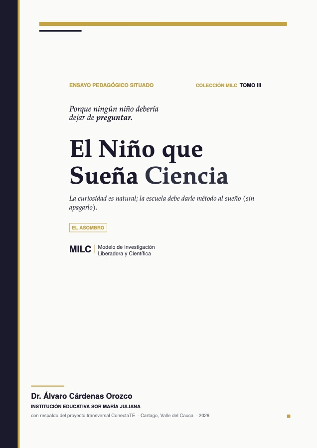
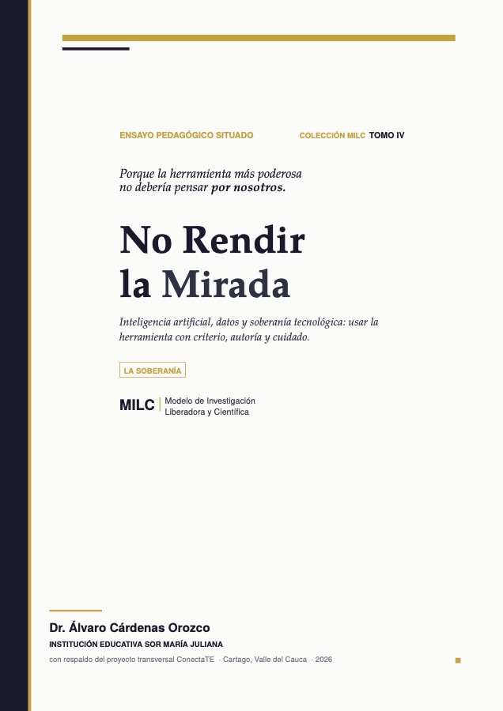
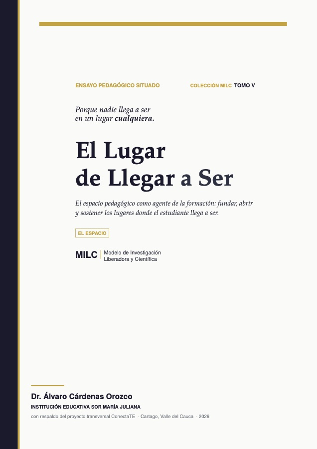

Enseñar con IA sin dejar de pensar.
Formo docentes e instituciones para usar la inteligencia artificial sin renunciar al criterio pedagógico.

equipos entre los mejores de Solve for Tomorrow 2025, entre 2.330 propuestas.
de la Colección MILC, en acceso abierto y con DOI.
de aula en básica, media y posgrado.
- Universidad Tecnológica de Pereira
- MinTIC
- British Council
- Samsung Solve for Tomorrow
- IASC y NASA
- Universidad del Valle
- Programa Ondas
- Computadores para Educar
Lo que hago
Para secretarías de educación, colegios, universidades y organizaciones.
Formación docente en IA
Talleres y diplomados para planear, evaluar y proteger datos con IA, sin que la herramienta reemplace la autoría del estudiante. A cargo del Módulo 9 del Diplomado en IA de la UTP.
Conferencias
IA en la escuela, Educación 4.0 y el modelo MILC para congresos y jornadas institucionales.
Asesoría en investigación
Trabajos de grado y proyectos de investigación educativa, de la pregunta a la publicación.
Semilleros STEM+
Robótica, pensamiento computacional y mentoría para ferias y convocatorias nacionales.
Plataformas educativas
Recursos a la medida. ConectaTE reúne 180 guías, 18 proyectos y 18 exámenes.
Cuatro de los 100 mejores proyectos del país salieron de un colegio público de Cartago.
propuestas de todo el país
- Ecobotica Top 50
- AlertaVida
- EduSeñas
- Mentes Brillantes
Lo que dicen
Estudiantes y directivas con quienes he trabajado.
“Sin su liderazgo, no seríamos nodo de pensamiento computacional.”
“Los talleres y proyectos nos enfrentan con la realidad.”
“Que el profe nos escucha.”
“El profe es muy amable y nos motiva.”
“Me ayudó a superar mis problemas emocionales y a ser mi mejor versión.”
Seis libros, libres.
La Colección MILC propone un modelo de investigación liberadora y científica para la escuela pública.
Leer la colección





Doctor
en Ciencias de la Educación, título convalidado por el MEN.
Par Experto
de Colombia Programa, MinTIC y British Council, 2024-2026.
UTP
Docente de la Universidad Tecnológica de Pereira desde 2018.
NASA
Campañas de ciencia ciudadana de la IASC con estudiantes, 2021-2026.
Hablemos.
Cuénteme qué necesita su institución. Respondo en un plazo máximo de 24 horas.
- WhatsApp+57 320 632 4740
- Correoalvaro.cardenas.orozco@gmail.com
- LinkedInÁlvaro Cárdenas